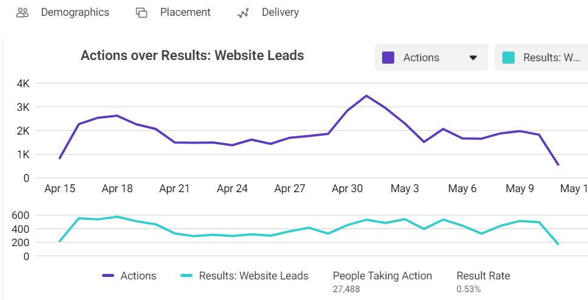

主要為協助全端工程師，跟團隊進行前後端串接、報表系統Debug、開發報表功能等等，
視學習能力和任務進行狀況調整工作，利用slack進行溝通，每天開會回報工作內容，
並在jira紀錄工作進行狀態。
● 安裝相關軟體及操作
● 接觸報表專案及FB後台
研發部主要會有一個報表系統，可以協助將投放在fb的後台廣告數據，用程式去call 相關API,將廣告數據拉回，依照使用者設定成想要的圖表形式，還有添加自己所想要的欄位，最後轉成excel下載，而我們則是要協助修改報表系統中出現的bug。
報表產生之圖表
FB 產生之圖表
● 維護報表系統及新增功能
在前述的訓練之後，我越來越能掌握此系統的編寫邏輯，也開始接觸更複雜的維護工作。此報表系統有些功能需要幫忙修改，像是有些特定欄位抓不到數據、與後台數據對不上等等，都需要檢視整個程式碼去做測試跟修改，偏向後端的工作，也會接觸到前端UI的美化。
在修bug的過程中，主管建議我將過程記錄下來，我便用一個心智圖記錄這些過程，最後也順利解決!